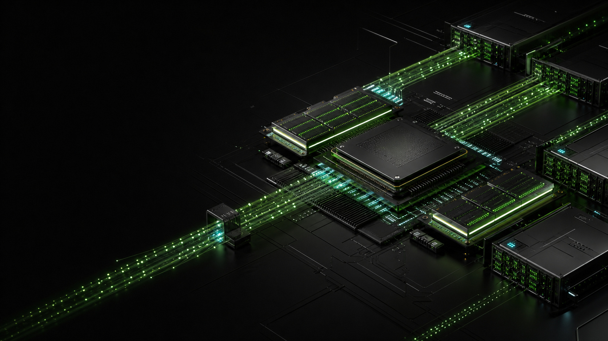
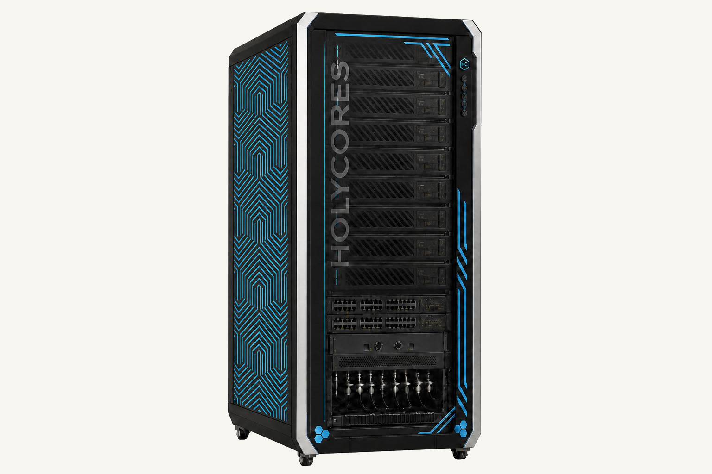

Time to first token
Time from request arrival until the first token reaches the user.
LLM INFERENCE
From the first token through sustained generation, from node validation to scale-out, HOLYCORES co-designs compute, memory, fabric, and scheduling as one inference system.

Real service quality is shaped by prompt processing, first-token response, sustained generation, concurrency, and stability. We build reproducible baselines around the actual model, context, precision, and service level.
Time from request arrival until the first token reaches the user.
Track inter-token latency and interactive fluidity during decode.
Measure stable request capacity within the target latency envelope.
Include energy, capacity, utilization, and availability in inference economics.
For long-context inference and real-time agentic workloads, AETHER and HOLYFLOW optimize prefill and decode independently—parallelizing large inputs while sustaining generation across KV cache, on-chip memory, and fabric.
Parallelize input compute and overlap data placement with dataflow so long-context requests reach generation sooner.
Coordinate on-chip memory, device memory, and inter-node dataflow to raise continuous token generation at low latency.
Performance targets guide architecture and validation. Results vary by model, context, precision, batch, system scale, and software version, and remain subject to formal benchmark reports.
Prefill processes large inputs quickly; decode repeatedly accesses weights and KV cache at low latency. HOLYFLOW Runtime coordinates both phases and schedules resources around request length, concurrency, and service objectives.
Form batches by context length, priority, and service class.
REQUESTDistribute input compute for scalable prompt processing.
CONTEXTCoordinate on-chip memory, device memory, and fabric for steady output.
GENERATEStream results while recording latency, throughput, and faults.
OBSERVE
AETHER connects nodes through high-bandwidth fabric while HOLYFLOW Runtime coordinates model partitioning, routing, fault isolation, and telemetry. Scale means predictable service as the system grows—not simply adding devices.
An open software path connects frameworks, compiler, operators, runtime, and production serving—with a fast path in and control at every layer.
Refill batches dynamically to improve utilization and control queues.
Allocate, reuse, and reclaim cache over the session lifecycle.
Validate BF16, FP8, INT8, and other strategies against quality targets.
Use candidate tokens to reduce serial decode waits where appropriate.
Trace operator, memory, fabric, and scheduling bottlenecks.
Support versions, rollout, scaling, health checks, and observability.

Flexible card-level inference capacity for enterprise servers and private AI.
View product →From desktop development to rack-scale, supporting large models and highly concurrent production serving.
View product →Set model, precision, context, TTFT, TPOT, throughput, and availability targets.
Reproduce quality, performance, memory, and power with representative data.
Add cards, nodes, and concurrency while tracking communication and tail latency.
Integrate monitoring, capacity planning, versions, recovery, and cost analysis.
Model support depends on architecture, operators, precision, and context configuration. Bring the target model and service objectives so we can establish a clear compatibility and performance baseline.
It depends on the workload. Interactive assistants often prioritize TTFT and TPOT, while batch jobs favor throughput and unit economics. Production plans need explicit priorities and limits.
Yes. Validate model quality and performance on a NOVA or AETHER node, then scale according to parallel strategy and fabric efficiency.
BRING YOUR MODEL